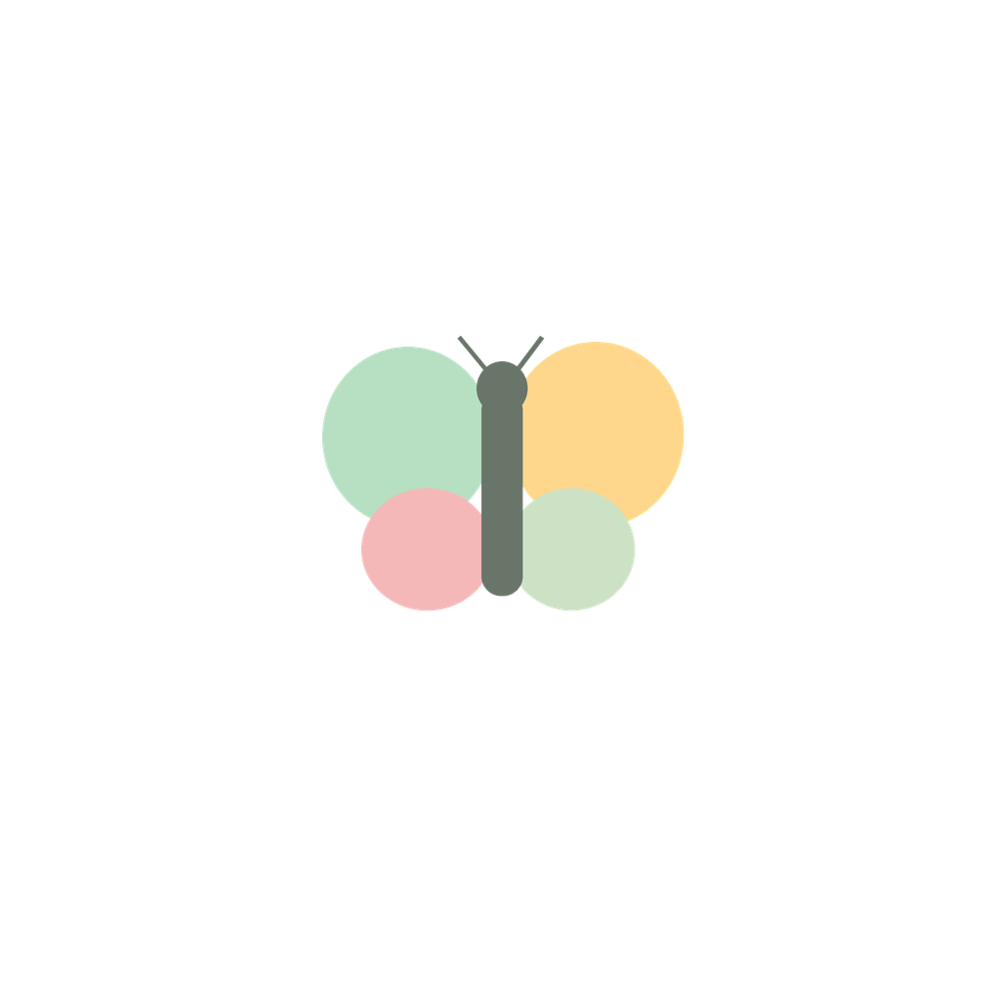
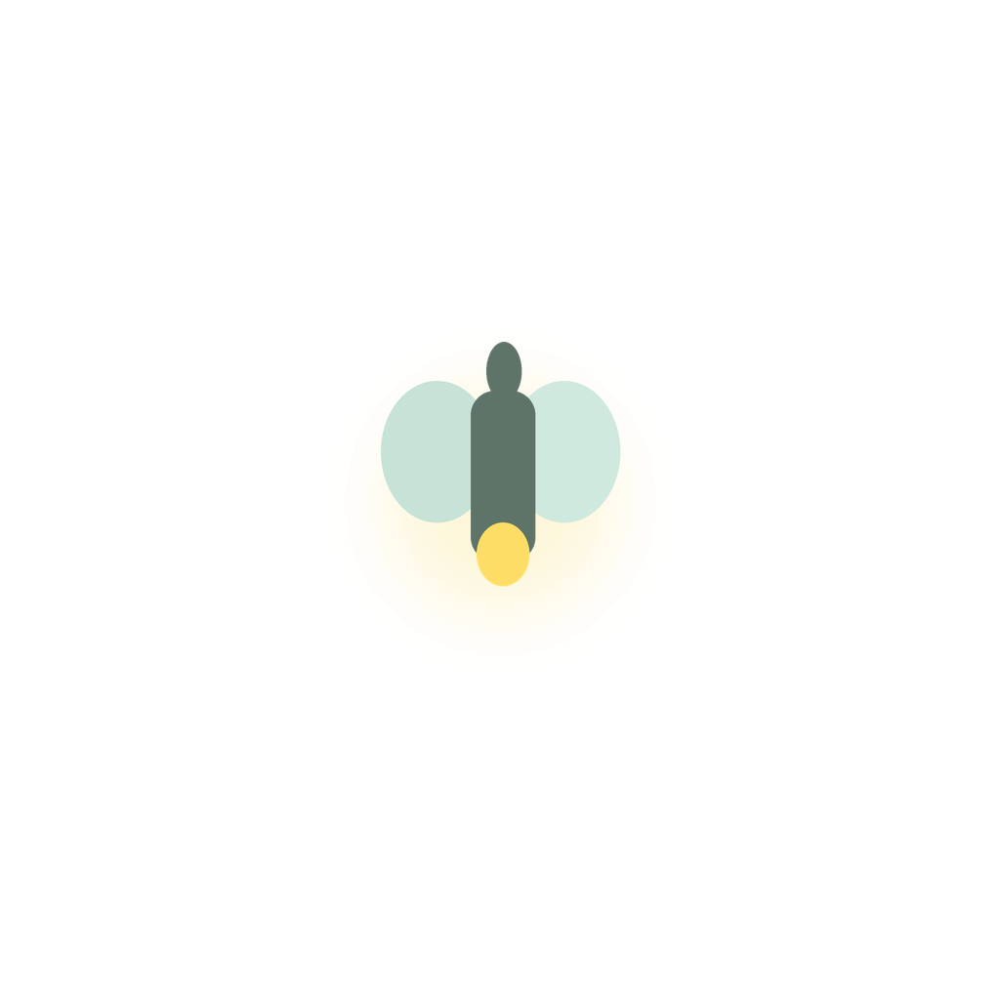
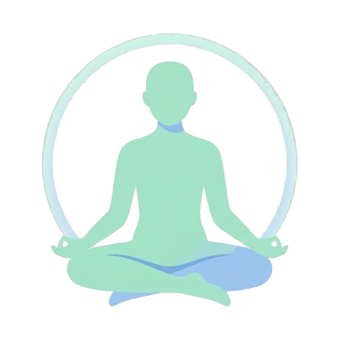

嗨，这一刻的你，感觉怎么样？点一下就好
记下了
0
连续记录天数
0
累计记录次数
–
近7天平均情绪
为你推荐
根据你最近的情绪状态和关联因素自动生成
补充细节
我发现的小规律
这些是记录中和情绪同时出现的关联，不代表因果——你可以告诉我们是否符合你的感觉
情绪趋势
情绪日历
最近 35 天，颜色越深代表当天情绪记录越正向
低落
愉悦
情绪关联分析
按出现次数排序，条形颜色代表该因素同时出现时的平均情绪；只是关联，不是原因
自我关怀方案
那今天先休息也可以。你已经完成了一次记录，这就足够了。
现在感觉怎么样？
呼吸练习
跟随圆圈的扩张与收缩调整呼吸，帮助神经系统平静下来
开始

正念冥想00:00
伴奏音乐
背景音乐
治愈系环境音，点一首开始播放，会一直在后台陪着你
运动建议
历史记录
数据与隐私
所有记录仅保存在你当前浏览器的本地存储（localStorage）中，不会上传到任何服务器。清除浏览器数据会导致记录丢失，建议定期导出备份。